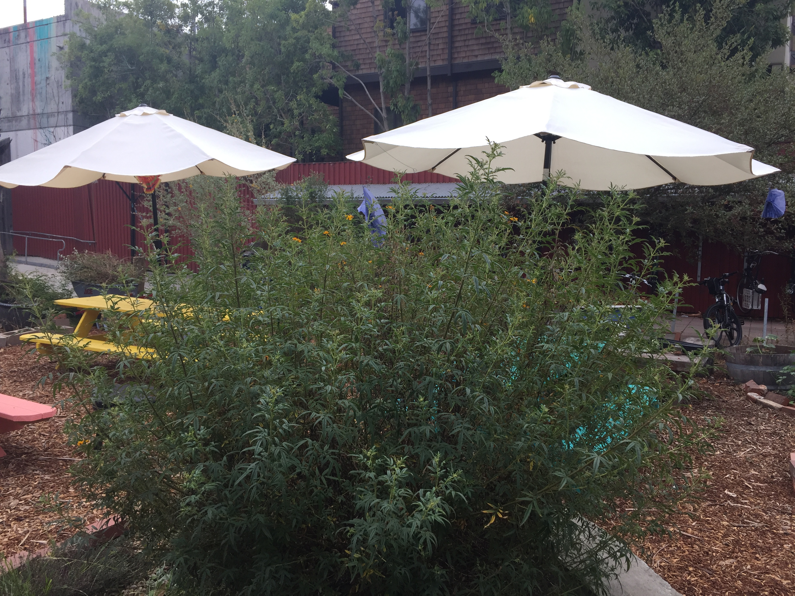

Cloyne Court Urban Garden
Our House
My good friend Milton is also tasked with tending to our community garden. Just as with Hannah and Isabelle, he works in the garden for three hours per week.
Like I said before, the garden is very peaceful, quiet, and natural, which lives in stark contrast to any facility I’ve visited so far, which either had some degree of crowding or stress. The garden is outside so it gets all of its light from the sun amidst the palm trees in the middle. The “customers” of this garden would be the college-age students who live in the coop. Nice paths were built in between the crop plants for a sort of scenic experience walking through.

Tending the garden is one of the ways Milton relaxes after long days studying at Berkeley. He describes putting his hands in the soil as restorative, and he simply loves witnessing the growth of all these plants. Unfortunately, he and Hannah and Isabelle have struggled getting the seeds into the soil, as the soil refuses to cooperate. In the spirit of the coop, I believe that the soil should learn to take seeds.
Both this urban garden and the food pantry follow communal principles that Fannie Lou Hamer’s Freedom Farms Cooperative utilized. One of these ideas is that a collective group should work towards the prosperity of the whole group as opposed to the individual, and as a result everyone would be happier. The second idea is to use excess resources to assist those who have been marginalized by society.